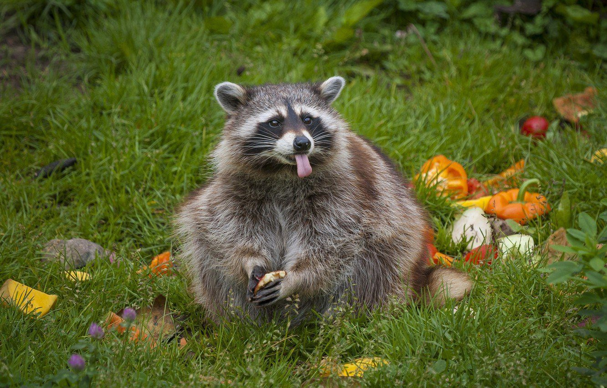

1.Родина енотов – Северная Америка.В другие части света они были завезены случайно или намеренно. 2.Еноты способны хватать и удерживать передними лапами различные предметы, например, мыть свою еду. 3.Еноты любят жить в норах, но сами не умеют их рыть, поэтому захватывают жилища барсуков, либо селятся в расщелинах скал и дуплах деревьев. 4.Еноты всеядны – они с одинаковым удовольствием едят фрукты, ягоды, желуди, орехи и мясо более мелких животных (см. интересные факты об орехах). 5.Еноты невосприимчивы к большинству инфекционных заболеваний, хотя вполне могут быть их переносчиками. 6.Если еноту не удается спрятаться или убежать от хищника, он притворяется мертвым. 7.Отпечаток лапы енота очень похож на след, который оставляет рука человека. 8.Еноты прекрасно лазают по деревьям и могут без особых усилий повиснуть на ветке. При этом ступни их задних лапок поворачиваются почти на 180 градусов. 9.Еноты, которых заводят в качестве домашних питомцев, легко учатся открывать водопроводные краны и с удовольствием пользуются этой способностью. 10.Самки енотов кормят свое потомство 24 раза в день.
